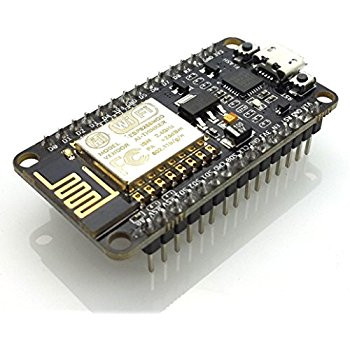

Safe
Because of NeZOOMi's unique light-following system, no human controller is required. This enables the exploration of areas, particularly tunnels and pipes, which would be too dangerous to reach otherwise.

Powerful, Proven Technology
NeZOOMi is based on the popular Espressif's(tm) ESP8266, a tried-and-tested Internet of Things microcontroller, which provides robust Wi-Fi capabilities, fast processing speeds, and unbeatable cost.
Low-Cost
Because NeZOOMi doesn't implement a complex and high-maintenance control system, only following a light, its costs are reduced significantly compared to the competition.